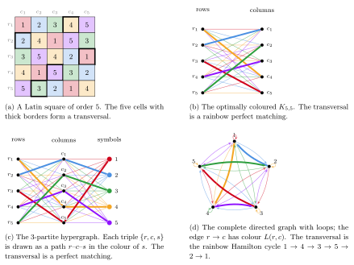
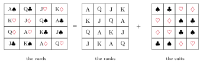
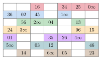
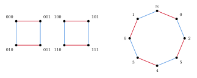
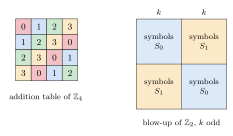
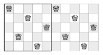
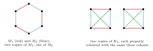

2 Rainbow matchings and transversals
This section is about rainbow matchings in properly coloured bipartite graphs and multigraphs. The motivating problem is to find transversals in Latin squares. Montgomery's survey [215] treats transversals in Latin squares in more detail, and Pokrovskiy's survey [239] covers the multigraph problems.
2.1 Latin squares and three translations
A Latin square of order $n$ is an $n\times n$ array filled with $n$ symbols so that each symbol appears exactly once in each row and each column. A partial transversal is a set of cells which share no row, column or symbol. A full transversal, or simply a transversal, is a partial transversal with $n$ cells. The multiplication table of a finite group is a Latin square.
A Latin square can be translated into three other objects, and each translation leads to its own generalisations. Figure 1 shows all three for the Latin square of order $5$ in Figure 1a. This square has exactly three transversals, and the figure shows one of them.
Coloured bipartite graphs. Take a copy of $\Knn$ whose two vertex classes are the rows and the columns of a Latin square $L$, and colour the edge between row $r$ and column $c$ with the symbol $L(r,c)$. No symbol appears twice in a row or a column, so this colouring is proper. It uses $n$ colours, the fewest possible, so we call it optimal. Every optimal colouring of $\Knn$ arises from a Latin square in this way. A partial transversal of $L$ is a rainbow matching, that is, a matching whose edges have distinct colours, and a full transversal is a rainbow perfect matching (Figure 1b).
$3$-partite hypergraphs. Take disjoint sets $R$, $C$ and $S$ of size $n$ for the rows, the columns and the symbols, and add the triple $\{r,c,s\}$ whenever $L(r,c)=s$. In the resulting $3$-partite $3$-uniform hypergraph, every pair of vertices from different parts lies in exactly one edge. A transversal of $L$ is a perfect matching of this hypergraph (Figure 1c). This is the link between transversals and matchings in designs, such as Steiner triple systems (Section 2.12).
Coloured directed graphs. Take the complete directed graph on the vertex set $[n]$, with a loop at each vertex, and colour the edge from $r$ to $c$ with $L(r,c)$. A transversal consists of the cells $(r,\sigma(r))$ for a permutation $\sigma$, so it is a spanning union of vertex-disjoint directed cycles (a $1$-factor) in which each colour appears once. When the $1$-factor is a single Hamilton cycle, the transversal is called a Hamilton transversal. The transversal in Figure 1 is one: it gives the cycle $1\to4\to3\to5\to2\to1$ (Figure 1d). Of the three transversals of this square, two are Hamilton transversals. This translation relates transversals to the rainbow paths and cycles of Section 4.

Some generalisations are natural in only one translation. In the bipartite graph, we may allow more than $n$ colours (Section 2.8), or only require that each colour appears on at most $k$ edges, which we call a globally $k$-bounded colouring (Section 2.9). A colouring is locally $k$-bounded if each colour appears at most $k$ times at each vertex, so a proper colouring is a locally $1$-bounded colouring. We may also replace $\Knn$ by other graphs and multigraphs (Sections 2.10 and 2.11).
2.2 Decompositions
Euler's officers
The question of decomposing a Latin square into transversals is older than Latin squares as a subject. A card puzzle published by Ozanam [230] in 1723 asks for the sixteen court cards and aces of a deck (A, K, Q, J in four suits) to be laid out in a $4\times4$ square so that every row and every column contains each rank once and each suit once. Figure 2 shows a solution. Forgetting the suits leaves a Latin square of ranks, and forgetting the ranks leaves a Latin square of suits. The cards of one suit form a transversal of the square of ranks, so the four suits decompose it into four transversals.

In 1782, Euler [120] asked the same question for order $6$. Thirty-six officers, one of each of $6$ ranks from each of $6$ regiments, are to stand in a $6\times 6$ square so that each row and each column contains one officer of each rank and one of each regiment. Euler wrote the regiments with Latin letters and the ranks with Greek letters, which is where the name Latin square comes from. Labelling each officer by their regiment gives a Latin square of order $6$, and the officers of one rank form a transversal. So Euler asked for a Latin square of order $6$ which decomposes into $6$ disjoint transversals. Labelling by rank instead gives a second Latin square, and the two squares are orthogonal: when one is placed over the other, every ordered pair of symbols appears exactly once. In general, a Latin square has an orthogonal mate exactly when it decomposes into transversals. In terms of colourings, Euler asked for an optimal colouring of $\Knn$ which decomposes into $n$ rainbow perfect matchings.
Euler constructed such squares for every $n\not\equiv 2\bmod 4$ and made the following conjecture.
No Latin square of order $n\equiv 2\bmod 4$ decomposes into transversals.
The conjecture holds for $n=2$, and Tarry [261] proved it for $n=6$ in 1900. It is false for all larger $n$. Bose and Shrikhande [57] found counterexamples of orders $22$ and $50$ in 1959, and soon afterwards Bose, Shrikhande and Parker [58] found counterexamples for every $n\equiv 2\bmod 4$ with $n\geq 10$.
Orthogonal Latin squares became important in the twentieth century through the design of experiments. In an agricultural trial with $n$ varieties of a crop, planting them in a Latin square on an $n\times n$ field balances out differences between the rows and the columns of the field. An orthogonal pair allows a second treatment, such as $n$ fertilisers, to be tested in the same field, and Fisher and Yates tabulated such designs for this purpose. Mutually orthogonal Latin squares are now a basic object in design theory and in coding theory. A family of $k$ mutually orthogonal Latin squares of order $n$ is the same as an orthogonal array of strength $2$ with $k+2$ factors. It is also the same as a code of length $k+2$ over an alphabet of size $n$ with $n^2$ codewords and minimum distance $k+1$, and such a code meets the Singleton bound.
Euler's question asks whether some Latin square of order $n$ decomposes into transversals. Many Latin squares do not. For every even $n$ there are Latin squares with no transversal at all (Section 2.3). For every odd $n\geq 5$ there are Latin squares without a decomposition into transversals, by results of Mann, of Evans, and of Wanless and Webb [265] (see [215]). In 1990, van Rees conjectured that a uniformly random Latin square typically has no decomposition into transversals. Wanless and Webb [265] reported that computations for small orders suggest the opposite. Bowtell and Montgomery settled the question.
A uniformly random Latin square of order $n$ decomposes into transversals with probability $1-o(1)$.
In particular, almost every Latin square of order $n\equiv 2\bmod 4$ is a counterexample to Euler's conjecture. A uniformly random optimal colouring of $\Knn$ with colour set $[n]$ is the same as a uniformly random Latin square. So Theorem 2.2 also settles a question in Pokrovskiy's survey [239, Conjecture 5.2], which asks whether such a colouring decomposes into rainbow perfect matchings with high probability.
Before Theorem 2.2, the following approximate result was known for all Latin squares.
Every Latin square of order $n$ contains $(1-o(1))n$ disjoint partial transversals, each with $(1-o(1))n$ cells.
The proof of Theorem 2.2 first splits the random Latin square into $n$ near-transversals, using the semi-random method as in Theorem 2.3, and then corrects all of them at once by absorption.
How many decompositions are there? Over all Latin squares of order $n$, the average number of decompositions into transversals is $((1+o(1))n/e^3)^{n^2}$, and Boyadzhiyska, Das and Szabó showed that no Latin square has more (see [259]). Tang and Zhao [259] ask whether a random Latin square has $((1-o(1))n/e^3)^{n^2}$ decompositions with high probability, so that Theorem 2.2 would hold with the typical count. They also ask a deterministic question in the spirit of Theorem 2.21: for large $n$, can the cells of every Latin square of order $n$ other than one prescribed cell be partitioned into $n+1$ partial transversals with $n-1$ cells each? Even the existence of one such cell is open.
Room squares
Euler's problem has an analogue for complete graphs of even order. A $1$-factorisation of $K_{2n}$ is a partition of its edges into $2n-1$ perfect matchings. This is the same as an optimal proper colouring of $K_{2n}$. Two $1$-factorisations are orthogonal if every perfect matching of one shares at most one edge with every perfect matching of the other. If we view the first $1$-factorisation as a colouring, then the matchings of an orthogonal second $1$-factorisation are rainbow perfect matchings. So a pair of orthogonal $1$-factorisations of $K_{2n}$ is an optimally coloured $K_{2n}$ together with a decomposition into rainbow perfect matchings.
Such pairs are equivalent to Room squares, introduced by Room [244] in 1955. A Room square of side $2n-1$ is a $(2n-1)\times(2n-1)$ array whose cells are either empty or contain an unordered pair from a set of $2n$ symbols. Every pair appears in exactly one cell, and every row and every column contains each symbol exactly once. The rows give one $1$-factorisation of $K_{2n}$ and the columns give an orthogonal one (Figure 3). Room squares are used to schedule tournaments between pairs of players, such as duplicate bridge tournaments: the rows are rounds, the columns are tables, and each cell records which two partnerships meet.

For every $n\geq 4$ there is an optimally coloured $K_{2n}$ which decomposes into rainbow perfect matchings. For $n\in\{2,3\}$ there is none. Equivalently, a Room square of odd side $r$ exists if and only if $r\notin\{3,5\}$.
Theorem 2.4 is about some $1$-factorisation, and not every $1$-factorisation has an orthogonal mate. By analogy with Theorem 2.2, one can ask whether a uniformly random $1$-factorisation of $K_{2n}$ has an orthogonal mate with high probability. We are not aware of results on this question.
Kotzig's perfect $1$-factorisation conjecture
A $1$-factorisation is perfect if the union of any two of its perfect matchings is a Hamilton cycle.
For every $n\geq 2$, the complete graph $K_{2n}$ has a perfect $1$-factorisation.
In the language of colourings, Kotzig's conjecture asks for an optimal colouring of $K_{2n}$ in which every two colour classes together form a single Hamilton cycle. The union of two disjoint perfect matchings is a union of even cycles, each of length at least $4$, and in a perfect $1$-factorisation it is always a single cycle of length $2n$. The colourings that give most of the counterexamples in this survey are at the other end. Identify the vertices of $K_{2^k}$ with $\mathbb{Z}_2^k$ and give the edge $xy$ the colour $x+y$. Then the colour classes $a$ and $b$ form the $4$-cycles $x,\,x+a,\,x+a+b,\,x+b$, so the union of any two colour classes consists of $4$-cycles (Figure 4). This colouring has no rainbow Hamilton path (Section 4).

Kotzig's conjecture holds when $2n-1$ is prime, by the $1$-factorisation in Figure 3, and when $n$ is prime. It also holds for many other orders found by computer (see [133]). The smallest open case is $2n=64$ [138, 87]. In 2026, perfect $1$-factorisations of $K_{92}$ were found [211]; $92$ had been one of the open orders below $100$. The analogous question for $\Knn$ has also been studied by computer [19, 20]. All these constructions are explicit and algebraic. Recently, probabilistic methods have been applied to the conjecture, first in a sparse setting. A random graph is not regular, so it has no $1$-factorisation at all. Glock and Sgueglia therefore asked for a fixed number of perfect matchings, any two of which form a Hamilton cycle.
For every $k$ there is $C$ such that, if $p\geq C\log n/n$, then with high probability the random graph $G(2n,p)$ contains $k$ edge-disjoint perfect matchings, any two of which form a Hamilton cycle.
Their main result is a counting statement. Given $k$ edge-disjoint perfect matchings of $K_{2n}$, a uniformly random perfect matching forms a Hamilton cycle with each of them with probability $\Theta_k(n^{-k/2})$. Cheng and Sgueglia then found almost all of a perfect $1$-factorisation.
The complete graph $K_{2n}$ has a $1$-factorisation in which $(1-o(1))2n$ of the perfect matchings have the property that any two of them form a Hamilton cycle.
This is the analogue of Theorem 2.3 for Kotzig's conjecture: it controls all but a vanishing fraction of the factorisation. The exact conjecture would require the last $o(n)$ perfect matchings to be chosen as well. As in Section 2.6 below, this is the hard part.
The bipartite version has a similar status. Laufer showed that a perfect $1$-factorisation of $K_{n+1}$ gives one of $K_{n,n}$, and Wanless made the corresponding conjecture.
The complete bipartite graph $K_{n,n}$ has a perfect $1$-factorisation if and only if $n=2$ or $n$ is odd.
Infinite families are known only for $n\in\{p,2p-1,p^2\}$ with $p$ an odd prime [138]. Kotzig's conjecture also has a consequence outside rainbow problems. An edge-colouring is acyclic if it is proper and every two colour classes form a forest. Fiamčík and, independently, Alon, Sudakov and Zaks conjectured that every graph of maximum degree $\Delta$ has an acyclic edge-colouring with $\Delta+2$ colours. Alon, Sudakov and Zaks [30] observed that a perfect $1$-factorisation of $K_{2n}$ gives acyclic edge-colourings of $K_{2n}$ and $K_{2n+1}$ with $2n+1$ colours. So Conjecture 2.5 would settle the acyclic edge-colouring conjecture for complete graphs.
2.3 Latin squares without transversals
The addition table of $\mathbb{Z}_n$ with $n$ even has no transversal. Suppose the cells $(r,\sigma(r))$, $r\in\mathbb{Z}_n$, form a transversal. Then the symbols $r+\sigma(r)$ are all the elements of $\mathbb{Z}_n$, so \[ \sum_{g\in\mathbb{Z}_n} g \;=\; \sum_{r\in\mathbb{Z}_n}\big(r+\sigma(r)\big) \;=\; 2\sum_{g\in\mathbb{Z}_n} g, \] and hence $\sum_g g=0$. But for even $n$ this sum is $n/2\neq 0$. The same argument works for every abelian group whose elements do not sum to $0$, and these are the abelian groups with exactly one element of order $2$. Paige [231] showed in 1947 that the addition table of an abelian group has a transversal if and only if the group does not have exactly one element of order $2$. For all finite groups, the answer is the Hall–Paige theorem (Theorem 2.11 in Section 2.4).
The same argument gives many more examples (Figure 5). Take the addition table of $\mathbb{Z}_2$ and replace each entry by a $k\times k$ Latin square, using one set $S_0$ of $k$ symbols for the entries $0$ and another set $S_1$ of $k$ symbols for the entries $1$. If $k$ is odd, the resulting Latin square of order $2k$ has no transversal. This construction is due to Maillet (1894). Since the $k\times k$ blocks can be chosen freely, it gives many Latin squares without transversals. Cavenagh and Wanless [77] used related constructions to show that, for even $n$, there are at least $n^{n^{3/2}(1/2-o(1))}$ species of Latin squares of order $n$ without transversals. Still, by Theorem 2.2, these form a vanishing proportion of all Latin squares.

All known Latin squares without a transversal have even order. Ryser conjectured that there are none of odd order.
Every Latin square of odd order has a transversal.
For groups of odd order, Conjecture 2.9 also follows directly: the leading diagonal of the multiplication table is a transversal, since $g\mapsto g^2$ is a bijection when $|G|$ is odd.
Latin squares of even order can be even more restricted. Ghafari and Wanless [132] constructed, for every even $n\geq 28$ except $n=30$, a Latin square of order $n$ in which every two transversals share a cell. They conjecture that, for every even $n\geq28$, there is a Latin square of order $n$ with no two disjoint transversals in which no cell lies in every transversal, and they verify this for $n=28$ and $32\leq n\leq 10000$. So the failure of decompositions need not come from a single blocking cell.
2.4 Multiplication tables of groups
Complete mappings and the Hall–Paige conjecture
By 1942, all known pairs of orthogonal Latin squares came from groups: those in the statistical tables of Fisher and Yates, and those constructed from finite fields by Bose and by Stevens. Mann [212] therefore asked which groups can be used. For a group, a single transversal is enough. If the cells $(x,\phi(x))$, $x\in G$, form a transversal of the multiplication table of $G$, then for every $g\in G$ the cells $(x,\phi(x)g)$ form another transversal, and these $n$ transversals partition the table. A bijection $\theta:G\to G$ is a complete mapping if $x\mapsto x\theta(x)$ is also a bijection. The transversals of the multiplication table are exactly the sets $\{(x,\theta(x)):x\in G\}$ for complete mappings $\theta$.
The multiplication table of a finite group $G$ has an orthogonal mate if and only if $G$ has a complete mapping.
Mann showed that no group of order $4n+2$ has a complete mapping, so groups cannot give counterexamples to Euler's conjecture. He also found new orthogonal pairs of order $12$ from groups. Paige [231] characterised the abelian groups with a complete mapping (Section 2.3), and observed that every group of odd order has one, namely $\theta(x)=x$. For general groups, Paige [232] showed that if $G$ has a complete mapping, then the product of all elements of $G$, in any order, lies in the commutator subgroup. Hall and Paige showed that this condition holds exactly when the Sylow $2$-subgroups of $G$ are trivial or non-cyclic. They proved that it is sufficient for solvable groups, and for the symmetric and alternating groups, and conjectured that it is always sufficient.
The multiplication table of a finite group $G$ has a transversal if and only if the Sylow $2$-subgroups of $G$ are trivial or non-cyclic.
The proof uses the classification of finite simple groups. Hall and Paige showed that if a normal subgroup $N$ and the quotient $G/N$ both have complete mappings, then so does $G$. Wilcox [267] reduced the conjecture to the simple groups and treated the groups of Lie type. Evans [121] treated the Tits group and all sporadic groups except the Janko group $J_4$, and Bray treated $J_4$ [66]. Two proofs for large groups that avoid the classification have since appeared. Eberhard, Manners and Mrazović [115] used analytic number theory to count complete mappings: a group $G$ of order $n$ satisfying the Hall–Paige condition has $(e^{-1/2}+o(1))\,|G^{\mathrm{ab}}|\,n!^2/n^n$ of them, where $G^{\mathrm{ab}}$ is the abelianisation. Müyesser and Pokrovskiy [224] gave a combinatorial proof by absorption. They showed more generally that if $X$, $Y$ and $Z$ are random-like subsets of a large group $G$ of the same size, then the table with rows $X$, columns $Y$ and symbols $Z$ has a transversal whenever $\sum X+\sum Y=\sum Z$ in $G^{\mathrm{ab}}$. This sum condition is necessary, by the argument of Section 2.3, and taking $X=Y=Z=G$ gives Theorem 2.11.
Queens and semiqueens
In 1848 Bezzel asked for eight queens on a chessboard, no two in the same row, column or diagonal. Nauck found all $92$ solutions in 1850, and Pauls showed in 1874 that $n$ non-attacking queens can be placed on an $n\times n$ board for every $n\notin\{2,3\}$ (see [61]). A placement with one queen in each row is a permutation $\sigma$, with the queen of row $j$ in column $\sigma(j)$, and it is non-attacking exactly when the values $\sigma(j)+j$ are distinct and the values $\sigma(j)-j$ are distinct. Pólya [242] studied placements that remain non-attacking when the board is repeated periodically to fill the plane. These are the placements on the torus, for which $\sigma(j)+j$ and $\sigma(j)-j$ are distinct modulo $n$ (Figure 6). Pólya showed that they exist exactly when $n\equiv 1,5\bmod 6$.

In the language of groups, a placement of $n$ semiqueens on the torus, which attack along rows, columns and one family of diagonals, is a complete mapping of $\mathbb{Z}_n$, that is, a transversal of the addition table of $\mathbb{Z}_n$. A toroidal placement of $n$ queens is a strong complete mapping of $\mathbb{Z}_n$, for which $x\mapsto x+\sigma(x)$ and $x\mapsto -x+\sigma(x)$ are both bijections. The counting questions for queens were solved by the methods used for Latin squares.
For odd $n$, the addition table of $\mathbb{Z}_n$ has $(e^{-1/2}+o(1))\,n\,n!^2/n^n$ transversals.
This proved a conjecture of Vardi. For queens, Luria [208] showed that the number $T(n)$ of toroidal placements is at most $((1+o(1))ne^{-3})^n$, and Bowtell and Keevash [61] showed that this is tight for $n\equiv1,5\bmod6$, using a random greedy process followed by absorption. For the ordinary board, Simkin [249] showed that the number of placements is $((1\pm o(1))ne^{-\alpha})^n$ with $\alpha=1.942\pm0.003$. Glock, Munhá Correia and Sudakov [135] answered a question of Nauck on completing a partial placement, using rainbow matchings: for large $n$, any $n/60$ non-attacking queens can be completed to $n$, while some placements of about $n/4$ queens cannot. Determining the completion threshold asymptotically is open. Glock, Munhá Correia and Sudakov show that their $n/4$ example has no fractional completion either, and conjecture that the threshold equals its fractional relaxation asymptotically, which splits the problem into two parts.
Subsquares: Snevily's conjecture
What happens if we keep only some rows and columns of a group table? Snevily [252] raised this question for $\mathbb{Z}_n$ in 1999. One of his motivations was a statement about finite fields: if $A$ and $B$ are subsets of the same size $k$ of a finite field of odd characteristic, then the elements of $B$ can be ordered as $b_{\pi(1)},\dots,b_{\pi(k)}$ so that the sums $a_i+b_{\pi(i)}$ are distinct.
Let $G$ be an abelian group of odd order and $A,B\subseteq G$ with $|A|=|B|=k$. Then the $k\times k$ subsquare of the addition table with rows $A$ and columns $B$ has a transversal.
For groups of even order, the subsquare may be the table of a subgroup with no transversal, such as $\{0,2\}\times\{0,2\}$ in $\mathbb{Z}_4$, and Snevily conjectured that in $\mathbb{Z}_{n}$ these and their translates are the only exceptions. Alon [21] proved Conjecture 2.13 for $\mathbb{Z}_p$ using the Combinatorial Nullstellensatz, Dasgupta, Károlyi, Serra and Szegedy [105] for all cyclic groups of odd order, and Arsovski [38] for all abelian groups of odd order. Müyesser and Pokrovskiy [224] determined, for large subsquares of arbitrary groups, exactly when a transversal exists. Goddyn and Halasz [140] showed that every group table has a partial transversal with $n-1$ cells, which is the Ryser–Brualdi–Stein conjecture for group tables. Müyesser and Pokrovskiy ask whether the Fourier-analytic counting of Eberhard, Manners and Mrazović can be adapted to count transversals of subsquares, or sequencings of groups (Section 4.2) [224].
Cycle types
A transversal of a group table can also be read as a permutation. A bijection $\psi:G\to G$ is an orthomorphism if $x\mapsto x^{-1}\psi(x)$ is also a bijection, and orthomorphisms correspond to transversals as complete mappings do. Orthomorphisms with prescribed cycle types are useful in constructions. Ringel's solution of the Heawood map colouring problem used orthomorphisms consisting of a single cycle, and orthomorphisms whose cycles all have length $6$ give cyclic Steiner triple systems (see [223]).
Let $G$ be an abelian group of order $n$ satisfying the Hall–Paige condition, and let $k\geq 2$ divide $n-1$. Then some orthomorphism of $G$ fixes the identity and permutes the other elements in disjoint cycles of length $k$.
Friedlander, Gordon and Tannenbaum verified the conjecture for groups of order at most $15$ and for abelian $p$-groups with $p\geq 3$. Even the case $k=3$ for cyclic groups remained open for forty years. Müyesser proved the conjecture for large groups, using the absorption methods described in Section 2.5.
The Friedlander–Gordon–Tannenbaum conjecture holds for all sufficiently large groups.
The method gives many other cycle types as well. Müyesser conjectured that the same holds for all large groups satisfying the Hall–Paige condition, abelian or not, and asked which cycle types an orthomorphism of an abelian group can have [223]. The case $k=3$ also has a version for arbitrary Latin squares: he conjectured that every proper colouring of $K_n$ with $n$ colours has a rainbow set of vertex-disjoint triangles covering all but a bounded number of vertices.
2.5 Full transversals in random Latin squares
For general Latin squares, the progress on Conjecture 2.9 has come from random Latin squares. These are hard to study, because changing one cell of a Latin square forces changes in many other cells. Kwan compared a random Latin square with the outcome of a random triangle removal process.
With high probability, a uniformly random Latin square of order $n$ has $((1-o(1))n/e^2)^n$ transversals.
Gould and Kelly [142] used switchings in random Latin rectangles, which are less rigid than Latin squares, and transferred the results to random Latin squares using bounds on permanents, following McKay and Wanless.
With high probability, a uniformly random Latin square has a Hamilton transversal.
This proves, for almost all Latin squares, a conjecture of Gyárfás and Sárközy: every Latin square of order $n$ should have a partial transversal with $n-2$ cells which contains no cycle in the directed translation. Bowtell, Montgomery, Müyesser and Pokrovskiy [63] later proved this conjecture for all large $n$, as a by-product of their proof of Andersen's conjecture (Section 4.1). Eberhard, Manners and Mrazović used a version of the circle method from analytic number theory to count transversals precisely.
With high probability, a uniformly random Latin square of order $n$ has $(e^{-1/2}+o(1))\, n!^2/n^n$ transversals.
Their result holds for every Latin square satisfying a spectral quasirandomness condition. This includes random Latin squares with high probability and the multiplication tables of quasirandom groups. In an earlier paper [115], they proved an asymptotic formula of the same kind for the number of transversals in the multiplication table of every large group satisfying the Hall–Paige condition. This gave a proof of Theorem 2.11 for large groups which does not use the classification of finite simple groups. Müyesser and Pokrovskiy [224] later gave a combinatorial proof for large groups, based on absorption (Section 2.4).
2.6 Partial transversals
Brualdi conjectured that every Latin square has a partial transversal with $n-1$ cells, and Stein made a stronger conjecture (Section 2.9). Together with Ryser's conjecture, this is called the Ryser–Brualdi–Stein conjecture.
Every Latin square of order $n$ has a partial transversal with $n-1$ cells, and a full transversal if $n$ is odd.
For even $n$, the examples of Section 2.3 show that $n-1$ cannot be replaced by $n$. In terms of colourings, the first part of Conjecture 2.19 says that every optimal colouring of $\Knn$ has a rainbow matching with $n-1$ edges.
Any maximal partial transversal has at least $n/2$ cells. Koksma improved this to $2n/3$ in 1969 and Drake to $3n/4$ in 1977. In 1978, Brouwer, de Vries and Wieringa [68] and Woolbright [270] independently proved that there is always a partial transversal with $n-\sqrt n$ cells. Shor [248] improved this to $n-O(\log^2 n)$ in 1982. His proof had an error, which Hatami and Shor [153] corrected in 2008.
Every Latin square of order $n$ has a partial transversal with $n-O(\log n/\log\log n)$ cells.
The proof starts from a random partial transversal with $n-o(n)$ cells and enlarges it one cell at a time, by exchanging edges along alternating paths in the coloured $\Knn$. Montgomery [215] explains why $\log n/\log\log n$ is the limit of this method: with fewer unused colours, there are too few alternating paths to reach a typical pair of vertices. To go further, one has to use the structure of the particular Latin square. Montgomery did this and removed the error term entirely.
For every sufficiently large $n$, every Latin square of order $n$ has a partial transversal with $n-1$ cells.
So, for large $n$, Ryser's conjecture is the only part of Conjecture 2.19 that is still open. The proof of Theorem 2.21 uses absorption. Since a general Latin square does not come from a group, Montgomery finds approximate algebraic structure in the colouring and uses it to build the absorber. The method needs the two cells that are missing from the final transversal, and Montgomery [215] explains why a full transversal for large odd $n$ needs new ideas.
Two refinements of Theorem 2.21 appeared recently. Tang and Zhao [259] showed that every large Latin square of order $n$ has $((1\pm n^{-c})\,n/e^2)^n$ partial transversals with $n-1$ cells, for some constant $c>0$. Anastos, Fabian, Müyesser and Szabó [34] proposed a version of the Ryser–Brualdi–Stein conjecture with prescribed numbers of edges of each colour. For a bipartite multigraph on $2n$ vertices which is the union of three perfect matchings $M_1,M_2,M_3$, they conjectured that for all $a_1,a_2,a_3\geq 0$ with $a_1+a_2+a_3=n-1$ there is a matching $M$ with $|M\cap M_i|=a_i$ for each $i$. They proved this with $n-2$ in place of $n-1$, and Boyadzhiyska, Christoph and Szabó [64] proved the conjecture. More generally, Anastos, Fabian, Müyesser and Szabó proposed a multiplicity version of the whole Ryser–Brualdi–Stein conjecture.
Let $K_{n,n}$ be decomposed into perfect matchings $M_1,\dots,M_n$, and let $a_1,\dots,a_n\geq0$ be integers with $a_1+\dots+a_n=n-1$. Then there is a matching $M$ with $|M\cap M_i|=a_i$ for every $i$.
Taking $a_i=1$ for $i<n$ and $a_n=0$ gives the first part of Conjecture 2.19, which Theorem 2.21 proves for large $n$. The theorem of Boyadzhiyska, Christoph and Szabó covers all sequences with at most three non-zero entries. Already four non-zero entries seem to require new ideas, and a first target is to find matchings with $n-f(k)$ edges when $k$ entries are non-zero [64]. No counterexample can come from the addition table of an abelian group, by an old result of Hall [34].
2.7 Counting transversals
The maximum number of transversals in a Latin square of order $n$ is $((1+o(1))n/e^2)^n$. The upper bound is due to Taranenko [260], and Glebov and Luria [134] gave a simpler proof and a matching construction. By Theorems 2.16 and 2.18, a random Latin square has this many transversals, up to the $o(1)$ term.
For odd $n$, Ryser's conjecture says that the minimum number of transversals is positive. Wanless [263] asked for upper bounds on this minimum. Dai, Divoux and Kelly [104] showed that some Latin squares of odd order have exponentially fewer transversals than a random one, and Luria found a simpler construction with fewer transversals.
For every $n\equiv 3\bmod 6$, there is a Latin square of order $n$ with at most $((1+o(1))\,2n/(3e^2))^n$ transversals.
The construction is a small change to a group table. Write $n=3q$, index rows, columns and symbols by $\mathbb{Z}_3\times\mathbb{Z}_q$, and put the symbol $(i+j,\,a+b+\mathbf{1}_{i=j=0})$ in the cell $((i,a),(j,b))$. This is the addition table of $\mathbb{Z}_3\times\mathbb{Z}_q$, except that one of the nine $q\times q$ blocks is shifted by one. Summing the symbols along a transversal, as in Section 2.3, shows that every transversal either lies inside the three diagonal blocks or avoids them.
These constructions bound the minimum from above. No lower bound is known, since even positivity for odd $n$ is Ryser's conjecture. Ghafari and Wanless asked whether a Latin square of odd order can have exactly one transversal, which they consider unlikely, and Dai, Divoux and Kelly believe that every Latin square of large odd order $n$ has at least $(n/C)^n$ transversals [104]. Tang and Zhao ask more generally for the smallest positive number of transversals [259].
2.8 Proper colourings with more colours
A generalised Latin square of order $n$ is an $n\times n$ array in which no symbol appears twice in a row or column, but which may use more than $n$ symbols. These are the proper colourings of $\Knn$. Theorems 2.20 and 2.21 hold for all proper colourings of $\Knn$ [174, 214]. Best, Pula and Wanless [55] conjectured that every proper colouring of $K_{n-1,n}$ has a rainbow matching with $n-1$ edges, and Montgomery [215] notes that the methods of [214] prove this for large $n$.
More colours should make a rainbow perfect matching easier to find. Montgomery, Pokrovskiy and Sudakov [217] showed that if at most $(1-o(1))n$ colours appear more than $(1-o(1))n$ times in a proper colouring of $\Knn$, then there are $(1-o(1))n$ disjoint rainbow perfect matchings. Akbari and Alipour asked how many colours force one rainbow perfect matching.
For large $n$, every proper colouring of $\Knn$ with at least $n^2/2$ colours has a rainbow perfect matching.
Barát and Nagy [46] proved this with $3n^2/4$ colours, and Best, Hendrey, Wanless, Wilson and Wood [54] with $(2-\sqrt 2)n^2$ colours.
There is $\varepsilon>0$ such that, for large $n$, every proper colouring of $\Knn$ with at least $n^{2-\varepsilon}$ colours has a rainbow perfect matching. In particular, Conjecture 2.24 holds.
Keevash and Yepremyan obtained $\varepsilon=1/200$, and the methods of [174] reduce the number of colours to $O(n\log n/\log\log n)$.
2.9 Globally bounded colourings
In 1975, Stein [253] made several conjectures in which the condition on rows and columns is replaced by a condition on the total number of times each symbol appears. An equi-$n$-square is an $n\times n$ array filled with $n$ symbols, each appearing exactly $n$ times. These correspond to the colourings of $\Knn$ with $n$ colours, each on exactly $n$ edges.
Every equi-$n$-square has a partial transversal with $n-1$ cells.
Every Latin square is an equi-$n$-square, so this contains Brualdi's conjecture. If no symbol appears too often, there is a full transversal. Erdős and Spencer proved this using a new version of the Lovász Local Lemma, the lopsided Local Lemma, which they introduced for this purpose.
Every $n\times n$ array in which no symbol appears more than $(n-1)/16$ times has a full transversal.
Bissacot, Fernández, Procacci and Scoppola [56] improved $1/16$ to $27/256$. Alon, Spencer and Tetali [29] showed that, if $n$ is a power of $2$ and no symbol appears more than $\varepsilon n$ times, then the array decomposes into transversals.
For equi-$n$-squares, Stein showed that there is a partial transversal with about $(1-1/e)n$ cells. Aharoni, Berger, Kotlar and Ziv [5] improved this to $2n/3$ using a topological version of Hall's theorem. Anastos and Morris [35] found partial transversals with $(3/4-o(1))n$ cells by a polynomial-time algorithm. Stein's conjecture is false.
For large $n$, there are equi-$n$-squares with no partial transversal with more than $n-\frac{1}{42}\ln n$ cells.
Pokrovskiy [239] asked whether every equi-$n$-square has a partial transversal with $n-o(n)$ cells. The answer is yes.
Every equi-$n$-square has $n-n^{1-\Omega(1)}$ disjoint partial transversals, each with $n-n^{1-\Omega(1)}$ cells. There are equi-$n$-squares with no partial transversal with more than $n-\Omega(\sqrt n)$ cells.
So Stein's conjecture fails by a polynomial amount, but it is true up to a polynomially smaller error. The positive part also gives almost a decomposition into near-transversals, in the spirit of Theorem 2.3. The behaviour of equi-$n$-squares is therefore different from that of Latin squares, where Theorem 2.21 gives $n-1$ cells.
Stein's conjecture asks for $n-1$ cells when each colour appears exactly $n$ times. If each colour appears slightly fewer times, a full transversal may exist. Erdős and Spencer needed every colour to appear at most about $n/16$ times, and Pokrovskiy and Sudakov [240] asked how far this can be pushed.
Does every colouring of $\Knn$ in which each colour appears at most $(1-o(1))n$ times have a rainbow perfect matching?
With an extra local condition the answer is yes, even in a strong form. Kim, Kühn, Kupavskii and Osthus [178] showed that if each colour appears at most $(1-o(1))n$ times in total and at most $o(n/\log^2 n)$ times at each vertex, then $\Knn$ has $(1-o(1))n$ edge-disjoint rainbow perfect matchings. Without a local condition, Problem 2.30 is open.
For equi-$n$-squares, the gap left by Theorem 2.29 is between a polynomial error $n^{1-\Omega(1)}$ and the deficit of order $\sqrt n$ in the construction. Chakraborti, Christoph, Hunter, Montgomery and Petrov suggest that their construction is optimal up to the constant.
There is a constant $C$ such that every equi-$n$-square has a partial transversal with at least $n-C\sqrt n$ cells.
One of Stein's conjectures from 1975 survives the counterexamples [215]. It weakens the Latin condition on one side only.
Every colouring of $K_{n,n-1}$ in which each vertex of the larger class meets at most one edge of each colour has a rainbow matching with $n-1$ edges.
This contains the Best–Pula–Wanless conjecture of Section 2.8, and Montgomery [215] describes it as widely open.
For locally and globally bounded colourings of complete multipartite graphs and hypergraphs, see Kamčev, Sudakov and Volec [167]. Globally bounded colourings of $K_n$ and rainbow Hamilton cycles are discussed in Section 4.
2.10 Multigraphs and families of matchings
The colour classes of a proper colouring are matchings. So we may forget the host graph and consider a family $F_1,\dots,F_m$ of matchings, which may share edges. A rainbow matching is a matching with at most one edge from each $F_i$, and it is full if it has exactly one edge from each $F_i$.
Any $n$ matchings of size $n+1$ in a bipartite multigraph have a full rainbow matching.
Conjecture 2.33 implies Brualdi's conjecture. Delete one symbol from a Latin square of order $n$. The other $n-1$ symbols give $n-1$ perfect matchings of size $n$ in $\Knn$, and a full rainbow matching of them is a partial transversal with $n-1$ cells. The size $n+1$ cannot be replaced by $n$ (Figure 7).

If each matching has $2n$ edges, a greedy argument gives a full rainbow matching. Aharoni, Charbit and Howard [7] improved $2n$ to $7n/4$, Kotlar and Ziv [182] to $5n/3$, Pokrovskiy [236] to $(\varphi+o(1))n$ where $\varphi$ is the golden ratio, Clemens and Ehrenmüller [89] to $(3/2+o(1))n$, and Aharoni, Kotlar and Ziv [12] to $3n/2+1$. In a different direction, Barát, Gyárfás and Sárközy [45] showed that $n$ matchings of size $n+1$ in a bipartite multigraph have a rainbow matching of size $n-\sqrt n$.
Any $n$ matchings of size $n+o(n)$ in a bipartite multigraph have a full rainbow matching.
Correia, Pokrovskiy and Sudakov [94] gave a short proof with $o(n)$ replaced by $n^{3/4}$. Their sampling trick turns results which miss a few of the matchings into results which use all of them, and they applied it to several of the problems below.
How many matchings of size $n$ force a rainbow matching of size $n$? For bipartite graphs, Drisko answered this.
Any $2n-1$ matchings of size $n$ in a bipartite graph have a rainbow matching of size $n$.
The two perfect matchings of a $2n$-cycle, each taken $n-1$ times, show that $2n-2$ matchings are not enough. Drisko's theorem extends to the intersection of two matroids (Section 3.6).
Any $2n$ matchings of size $n$ in a graph have a rainbow matching of size $n$. If $n$ is odd, $2n-1$ matchings suffice.
They proved this with $3n-2$ matchings, and Aharoni, Briggs, Kim and Kim [6] improved this to $3n-3$.
Without bipartiteness, the analogue of Conjecture 2.33 needs matchings of size $n+2$ (Figure 7).
Any $n$ matchings of size $n+2$ in a multigraph have a full rainbow matching.
Gao, Ramadurai, Wanless and Wormald proved an asymptotic version for multigraphs with small edge multiplicities. Keevash and Yepremyan [176] found rainbow matchings of size $n-O(1)$ when the multiplicities are $o(n)$ and the matchings have size $n+o(n)$. For arbitrary multigraphs, Aharoni, Berger, Chudnovsky and Zerbib [4] showed that $n$ matchings of size $n$ have a rainbow matching of size $2n/3-1$.
For large $n$, any $n$ matchings of size at least $n+20n^{1-1/16}$ in a multigraph have a full rainbow matching.
Chakraborti and Loh [81] allowed colour classes with maximum degree $o(n)$ and multiplicities $o(n)$. As an application, they showed that every proper colouring of a graph with $2n+o(n)$ colours, each on at least $n$ edges, has a rainbow matching of size $n$.
Grinblat [147] studied a variant that came from algebras of sets. Let $v(n)$ be the least $v$ such that every $n$-edge-coloured multigraph, in which each colour class is a vertex-disjoint union of cliques covering at least $v$ vertices, has a full rainbow matching. Taking $n-1$ disjoint triangles, each in all $n$ colours, shows that $v(n)\geq 3n-2$.
For large $n$, $v(n)=3n-2$. This proves a conjecture of Grinblat.
Earlier bounds were $10n/3+o(n)$ by Grinblat, $16n/5+O(1)$ by Nivasch and Omri [227], and $3n+O(\sqrt n)$ by Clemens, Ehrenmüller and Pokrovskiy [90]. For simple graphs, Munhá Correia and Yepremyan [96] showed that $2n+o(n)$ vertices suffice.
Between these two extremes, let $v_m(n)$ be the least number of vertices that each colour class must cover when every edge has multiplicity at most $m$. Then $v_n(n)=3n-2$ and $v_1(n)=2n+o(n)$, and Munhá Correia, Pokrovskiy and Sudakov showed $v_m(n)\leq 2n+2m+O(n/(\log n)^{1/4})$, which is asymptotically tight when $m$ is a small constant fraction of $n$ [94, 95]. The case $m=1$ is closely tied to transversals. Add $c/2$ disjoint stars with $n$ edges each, one of each colour, to a properly $n$-coloured $\Knn$. Every colour class is now a union of cliques covering $2n+c$ vertices, so a bound $v_1(n)\leq 2n+c$ would give a rainbow matching of size $n$ and hence a partial transversal with $n-c/2$ cells in every Latin square [95]. Munhá Correia and Yepremyan ask whether $2n+C\log^2 n$ vertices suffice [96].
For the conjectures of Aharoni and Berger and of Gao, Ramadurai, Wanless and Wormald, the known error terms are polynomial. For Latin squares the error is $O(\log n/\log\log n)$ in Theorem 2.20, or one cell in Theorem 2.21. Munhá Correia, Pokrovskiy and Sudakov point out that sub-polynomial errors would need new ideas, since their sampling trick requires polynomial errors [94], and Montgomery [215] notes that the absorption methods behind Theorem 2.21 do not seem to apply to Conjecture 2.33.
Rainbow matchings in families of sets, such as the Aharoni–Howard conjecture and the rainbow version of the Erdős matching conjecture, are discussed in Section 7.
2.11 General host graphs
The colour degree of a vertex is the number of distinct colours on the edges at it, and $\delta^c(G)$ is the minimum colour degree of $G$.
Every edge-coloured graph $G$ has a rainbow matching of size $\lceil\delta^c(G)/2\rceil$.
This was conjectured by Li and Wang [194], and LeSaulnier, Stocker, Wenger and West [190] had proved the bound $\lfloor\delta^c(G)/2\rfloor$. A properly coloured complete graph on $\delta^c(G)+1$ vertices shows that it is tight. If $G$ has many vertices, there is a rainbow matching of size $\delta^c(G)$: Kostochka, Pfender and Yancey [180] proved this when $|V(G)|\geq 4.25\,\delta^c(G)^2$.
For proper colourings, Wang asked whether every properly coloured graph with minimum degree $\delta$ and at least $f(\delta)$ vertices has a rainbow matching of size $\delta$. Diemunsch, Ferrara, Moffatt, Pfender and Wenger [108] showed that $f(\delta)=6.5\delta$ works, and later work [199, 150, 200] reduced this to $4\delta-4$ for $\delta\geq 4$. A properly coloured $K_{2\delta-1}$ shows that $f(\delta)\geq 2\delta$. Closing the gap between $2\delta$ and $4\delta-4$ is open. Other conditions, such as average colour degree or the number of edges plus the number of colours, are studied in [185, 274, 204, 205]. For example, Zhou [274] conjectures that, apart from one coloured graph on four vertices, every edge-coloured graph with average colour degree at least $2k-1$ has a rainbow matching of size $k$. Colour-degree conditions for rainbow cycles and tilings are discussed in Sections 4 and 5.
2.12 Steiner triple systems
A Steiner triple system of order $n$ is a $3$-uniform hypergraph on $n$ vertices in which every pair of vertices lies in exactly one edge. They exist exactly when $n\equiv 1,3\bmod 6$. By the hypergraph translation of Section 2.1, a Latin square is a $3$-partite analogue of a Steiner triple system, and a transversal is a perfect matching. Brouwer made the analogue of Brualdi's conjecture.
Every Steiner triple system of order $n$ has a matching with at least $(n-4)/3$ edges.
The Fano plane shows that the bound is tight for $n=7$ (Figure 8), and constructions of Wilson and of Bryant and Horsley show that it is tight for infinitely many $n$ (see [215]).
Brouwer proved a bound of $n/3-O(n^{2/3})$, and Alon, Kim and Spencer [26] improved it to $n/3-O(n^{1/2}\log^{3/2}n)$. Keevash, Pokrovskiy, Sudakov and Yepremyan [174] turned the problem into a rainbow matching problem. They split the vertices at random into three sets $A$, $B$ and $C$, and join $a\in A$ to $b\in B$ by an edge of colour $c\in C$ whenever $abc$ is a triple. This gives a properly coloured bipartite graph whose rainbow matchings are matchings of the Steiner triple system, and they obtained $n/3-O(\log n/\log\log n)$.
For large $n$, every Steiner triple system of order $n$ has a matching with $\lfloor n/3\rfloor-1$ edges. In particular, Conjecture 2.41 holds for large $n$.
As for Latin squares, the bound cannot be improved in general, because of the constructions above. Tang and Zhao [259] showed that the number of such matchings is $((1\pm n^{-c})\,n/(2e^2))^{\lfloor n/3\rfloor}$, so these near-perfect matchings are not rare. For random Steiner triple systems much more is true, as we now discuss.
A Steiner triple system is resolvable if its triples split into perfect matchings. The existence of resolvable systems is Kirkman's schoolgirl problem from 1850: fifteen schoolgirls walk out in five rows of three on seven days, and no two of them should walk in the same row twice. Ray-Chaudhuri and Wilson [243] showed that resolvable Steiner triple systems exist for every $n\equiv 3\bmod 6$. For random Steiner triple systems, Kwan [189] showed that almost every Steiner triple system of order $n\equiv 3\bmod 6$ has a perfect matching, and Ferber and Kwan [124] found $(1/2-o(1))n$ disjoint perfect matchings, which cover almost all triples.
Almost every Steiner triple system of order $n\equiv 3\bmod 6$ is resolvable.
Theorem 2.2 is the $3$-partite version of Conjecture 2.43, because a Latin square decomposes into transversals exactly when its $3$-partite hypergraph is resolvable. Bowtell and Montgomery [62] note that some tools in their proof come from counting perfect matchings in bipartite graphs and have no known analogue for Steiner triple systems. There is also a counting version. The number of resolutions of a Steiner triple system of order $n$ is at most $((1+o(1))n/(2e^3))^{n^2/6}$, and Tang and Zhao [259] ask whether a random Steiner triple system has this many with high probability, which would strengthen Conjecture 2.43.